Лекция №4. Обработка последовательных данных и текста
Что такое последовательные данные и какие они бывают?
Неформальное определение
Представьте себе данные, где важен не только сам факт наличия информации, но и порядок её поступления. Это и есть последовательные данные. В отличие от статичного изображения, где все значения пикселей можно получить "одномоментно", здесь мы имеем дело с цепочкой элементов, которые появляются один за другим. Смысл часто проявляется не в одном элементе, а в том, как элементы связаны между собой: предыдущие значения создают контекст, который помогает интерпретировать последующие.
Ключевая особенность таких данных — переменная длина. Один текст может состоять из 5 слов, другой — из 500; один аудиофрагмент длится 1 секунду, другой — минуту. Поэтому задача глубокого обучения в этом контексте — научиться извлекать закономерности из упорядоченных последовательностей, учитывая их контекст и то, что длина последовательности заранее не фиксирована.
Формальное определение
Последовательность длины \(T\) можно определить как упорядоченный набор векторов признаков, обычно зависящих от времени. Пусть каждый элемент последовательности представляет собой вектор \(x_t \in \mathbb{R}^n\), где \(n\) — размерность признакового пространства, а \(t\) — индекс позиции (времени). Тогда вся последовательность записывается как
В наборе данных мы обычно имеем дело с множеством таких последовательностей \(\{X^{(1)}, X^{(2)}, \ldots, X^{(N)}\}\), где \(N\) — число примеров. При этом длина каждой последовательности может быть своей: \(T^{(i)}\) не обязана совпадать для разных объектов.
Временные ряды
(def) Временной ряд — это значения некоторого признака (или набора признаков), изменяющегося во времени, измеренные в дискретные моменты. Формально можно сказать так: пусть \((y_t,\, t \in \mathbb{N})\) — временной ряд, и нам известны значения \(y_1, \ldots, y_T\). Во многих задачах цель заключается в том, чтобы предсказать значение ряда в некоторый будущий момент времени, например \(y_{T+1}\) или вообще \(y_{t_j}\) для заданного \(t_j\).
Основное интуитивное предположение последовательных данных заключается в том, что по будущее состояние определяется его прошлым: в данных могут быть тренды, сезонности, циклы и шум, и модель должна научиться использовать прошлый контекст, чтобы прогнозировать будущее.
Примеры временных рядов
Классические примеры временных рядов — это цены и объёмы торгов на бирже, потребление электроэнергии по часам, температура воздуха по дням, число обращений в поддержку по неделям, число поездок в такси по минутам и т.п. Во всех этих случаях данные устроены как последовательность измерений, и порядок наблюдений принципиально важен: перемешивание элементы местами влечет за собой нарушения внутренней закономерности.
Сигналы и их связь с временными рядами
В контексте анализа данных термины "сигнал" и "временной ряд" иногда используют как взаимозаменяемые, но между ними есть важное различие. Сигнал — более общее понятие: это физическая величина, изменяющаяся во времени (или в пространстве). Изначально сигнал обычно непрерывен по своей природе, например звуковая волна или электромагнитные колебания.
Временной ряд, напротив, чаще понимают как дискретную запись сигнала: мы измеряем сигнал через равные промежутки времени и получаем набор чисел. Поэтому можно сказать, что временной ряд — это "оцифрованное" представление непрерывного сигнала.
Примеры сигналов
Типичные примеры сигналов — аудиосигнал (речь, музыка), ЭКГ и другие медицинские измерения, данные с акселерометра и гироскопа в смартфоне, радиосигналы, показания датчиков в IoT. Эти данные могут быть одномерными или многоканальными, но в любом случае это последовательности, в которых важна динамика и форма изменения во времени.
Текст как последовательность
Текст — это тоже последовательные данные, но особого типа. Он представляет собой упорядоченную последовательность символов. В отличие от сигналов и временных рядов, элементы текстовой последовательности дискретны: это не числовое значение измеряемой величины или характеристики объекта, а условные символы, которым мы должны научиться приписывать смысл.
Ключевое отличие текста от других последовательностей в том, что здесь смысл кодируется не физическими измерениями, а абстрактными знаками, организованными по правилам языка, естественного или формального (например, программный код). Поэтому главная сложность обработки текста — научиться переводить дискретные токены в численное представление так, чтобы оно отражало семантику и контекст.
Задачи обработки последовательностей
Последовательные данные встречаются в очень разных областях, но типовые задачи можно сгруппировать по двум большим направлениям: обработка сигналов/временных рядов и обработка текста. В обоих случаях модель должна научиться использовать контекст: то, что было раньше, влияет на то, как интерпретировать то, что происходит сейчас.
Задачи обработки сигналов и временных рядов
Для временных рядов и сигналов чаще всего решают задачи прогноза и распознавания. Например, мы можем предсказывать будущие значения ряда, классифицировать целый сигнал (что это за звук или состояние пациента), либо детектировать события внутри сигнала — моменты, когда произошло что-то важное. Сюда же относятся задачи фильтрации и восстановления: убрать шум, заполнить пропуски, восстановить “чистый” сигнал по наблюдениям.
Важно, что в этих задачах последовательность обычно числовая, и модель должна уметь работать с длительными зависимостями: события на далёком прошлом могут влиять на то, что происходит сейчас.
Задачи обработки текста
В тексте задачи обычно формулируются как понимание или порождение. К "пониманию" относятся:
- классификация текста (тональность, тема);
- извлечение сущностей;
- разметка последовательности;
- поиск ответов в тексте.
К "порождению" относятся:
- машинный перевод;
- суммаризация;
- генерация текста и диалоговые системы.
Особенность текста в том, что смысл часто определяется не отдельными словами, а их взаимным расположением и контекстом. Поэтому в текстовых задачах модели нужно научиться представлять значение токенов с учётом окружения.
Типы отображений между входом и выходом
Многие задачи обработки последовательностей удобно описывать через определение вида входных и выходных данных:
- Many-to-One: на вход подаётся последовательность, на выходе одно значение. Пример: классификация текста или целого аудиофрагмента.
- One-to-Many: на вход один объект, на выходе последовательность. Пример: генерация текста по теме или описанию.
- Синхронизированный Many-to-Many: вход и выход — последовательности одинаковой длины, и каждому элементу входа соответствует элемент выхода. Пример: разметка каждого слова в предложении или классификация каждого кадра сигнала.
- Несинхронизированный Many-to-Many: вход и выход — последовательности разной длины, и явного соответствия по позициям нет. Пример: машинный перевод, где число слов в предложениях разных языков отличается.
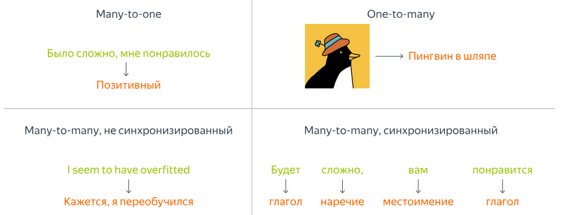
Эта классификация задач полезна тем, что позволяют заранее понимать, какой тип архитектуры нам потребуется и как будет выглядеть обучение модели.
Векторизация последовательных данных
Векторизация временных рядов и сигналов
Векторизация временных рядов и сигналов обычно не вызывает фундаментальных сложностей, потому что эти данные изначально являются числовыми. На вход модели можно подавать последовательность значений напрямую: например, окно сигнала длины \(T\) как матрицу \(X \in \mathbb{R}^{T \times n}\), где \(n\) — число каналов (для моно-аудио \(n=1\), для многоканальных датчиков — больше).
Благодаря непрерывной природе таких данных мы можем использовать линейные слои, сверточные слои и рекуррентные архитектуры без предварительной обработки: смысл уже зашит в самих измерениях. Основная инженерная задача здесь обычно связана не с векторизацией как таковой, а с выбором масштаба (нормализация), длины окна и способа разбиения на фрагменты.
Текстовые эмбеддинги
С текстом ситуация принципиально иная: текст состоит из дискретных символов и слов, поэтому его нельзя подать в нейросеть напрямую в исходном виде. Нам нужно построить его численное представление, которое одновременно выполняет две функции: идентифицирует каждый элемент текстовой последовательности и отражает его смысл так, чтобы семантически близкие элементы текста располагались близко в векторном пространстве. Эту идею можно визуализировать следующим образом:
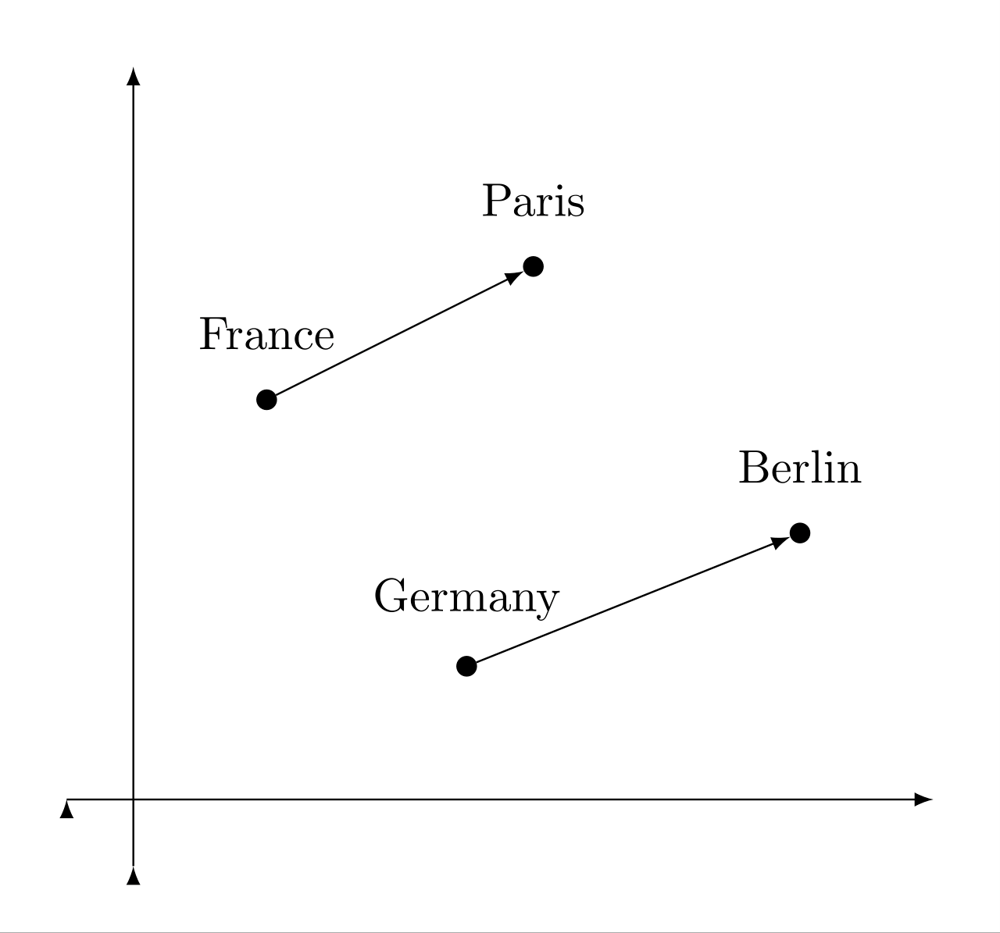
Поэтому в NLP почти всегда появляется стандартная цепочка преобразований: текст разбивается на токены, затем каждый токен превращается в целое число (индекс словаря), а после этого индексы преобразуются в векторы-эмбеддинги. На выходе получается последовательность векторов \(X = (x_1, x_2, \ldots, x_T)\), где каждый \(x_t \in \mathbb{R}^d\) — уже "понятный" для модели носитель смысла.
Разбиение текста на токены
Что такое токенизация?
(def) Токенизация — это процесс разбиения исходного текста на элементы, с которыми дальше работает модель. Эти элементы называются токенами: ими могут быть слова, части слов или даже отдельные символы. После токенизации каждому уникальному токену сопоставляется номер в словаре, и именно этот номер затем используется для получения эмбеддинга.
Важно понимать, что токенизация — это не просто техническая деталь. То, как именно мы режем текст на токены, напрямую влияет на размер словаря, устойчивость к ошибкам и способность модели работать с редкими словами.
Уровни токенизации: слова, морфемы, символы
Если токенизировать по словам, всё выглядит интуитивно, но появляется проблема редких и новых слов: словарь быстро разрастается, а незнакомые слова не могут быть обработаны и превращаются в так называее out-of-vocabulary (OOV) и обозначаются одним общим токеном. Символьная токенизация решает проблему неизвестных слов, но сильно увеличивает длину последовательности и усложняет обучение, потому что модели приходится выделять смысл из слишком мелких единиц.
Искомый алгоритм токенизации
В идеале хочется получить токенизацию, которая даёт небольшой словарь, но при этом оставляет токены достаточно "осмысленными". Ещё одно важное требование — универсальность: токенизация должна работать не только для одного языка и одного домена. Наконец, желательно нивелировать проблему out-of-vocabulary, чтобы модель не ломалась на новых словах.
Эти требования конфликтуют между собой, поэтому в реальных системах токенизация — это компромисс между компактностью словаря, длиной последовательностей и качеством представления текста.
От морфем к субсловам
Идея субсловной токенизации близка к морфемному анализу, но не требует полноценного лингвистического анализа. Вместо достоверных и заранее определенных морфем используются частотные фрагменты текста, из которых можно собирать слова. Такие фрагменты называются субсловами. Это особенно важно для языков со сложной морфологией: модель получает возможность переиспользовать общие части слов и лучше обобщаться на новые формы слов.
BPE: идея, encoding и decoding
BPE (Byte Pair Encoding) — один из самых популярных алгоритмов субсловной токенизации. Его основная идея проста: мы начинаем с элементарных единиц (часто это символы или байты, кодирующие эти символы), а затем итеративно объединяем самые частые пары, постепенно формируя устойчивые субслова. В результате получается словарь, который хорошо покрывает наиболее частые паттерны языка и при этом остаётся относительно компактным.
Encoding в BPE — это разбиение нового текста на токены из полученного словаря, обычно жадным образом: мы стараемся покрыть строку максимально длинными известными фрагментами.
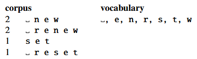
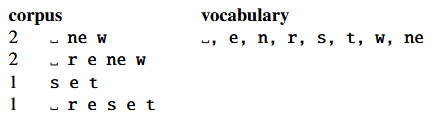
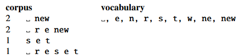
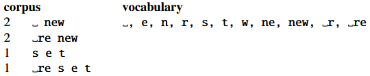
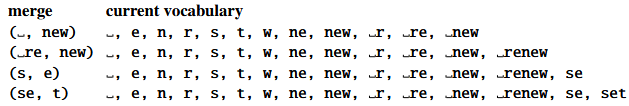
Decoding — обратная операция: склейка токенов обратно в исходную строку. Эта обратимость важна: токены должны быть удобны для модели, но при этом мы должны уметь вернуться к читаемому тексту.
Текстовые эмбеддинги
Эмбеддинг как числовое представление токена
(def) Эмбеддинг — это результат преобразования токена в вектор в некотором непрерывном векторном пространстве. Идея состоит в том, чтобы сопоставить каждому токену такой вектор, чтобы геометрическая близость между векторами отражала семантическую или синтаксическую близость между соответствующими словами. На практике эмбеддинги позволяют нейросети работать с текстом так же естественно, как она работает с числовыми признаками: на вход поступает уже последовательность векторов фиксированной размерности.
One-hot и его ограничения
Самый прямолинейный способ представить токен — это one-hot вектор размерности словаря. В таком представлении токен однозначно идентифицируется, но оно не несёт никакой информации о смысле: любые два разных слова оказываются одинаково "далёкими" друг от друга. Кроме того, one-hot представление крайне неэффективно по памяти и вычислениям: словарь может быть огромным, а вектор -- разреженным, то есть почти весь состоит из нулей.
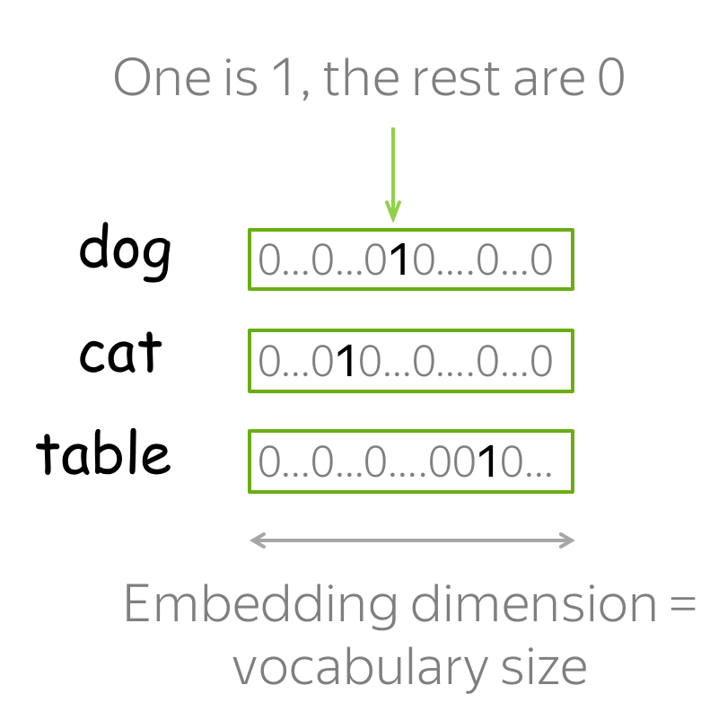
В поисках смысла: дистрибутивная гипотеза
Чтобы эмбеддинги действительно отражали смысл, нужно опираться на идею, которая связывает значение слова с его употреблением.
Дистрибутивная гипотеза
Дистрибутивная гипотеза утверждает, что слова, встречающиеся в похожих контекстах, как правило, имеют схожие значения.
В этом смысле слово характеризуется своим окружением: не самим по себе, а тем, с какими другими словами оно появляется рядом.
Хорошая иллюстрация — фраза "Эти типы стали есть в цехе". В зависимости от контекстного значения слов "типы" и "есть" смысл фразы может сильно отличаться. В одном варианте речь может идти о стали как о металле, несколько типов которых есть в цеху. В другом под "типами" мы можем понимать рабочих завода, которые принимают пищу в цеху.
Частотные методы получения эмбеддингов
Исторически первые методы построения смысловых представлений были основаны на статистике: они подсчитывали, как часто слова встречаются в документах и в каких контекстах появляются. Из таких частотных таблиц можно получить простые векторные представления, где каждая координата отражает связь слова с каким-то признаком контекста.
Один из ключевых шагов в эту сторону — построение матрицы совместной встречаемости слов. Обычно выбирается окно контекста в виде фиксированного количество слов слева и справо от анализируемого, и для каждого анализируемого слова считается, какие другие лова встречаются рядом и как часто. В результате получается матрица, где строка соответствует целевому слову, а столбец — слову из контекста. Такая матрица уже несёт информацию о значениях, но она получается очень большой и разреженной, а частоты в ней сильно перекошены в пользу самых популярных слов.
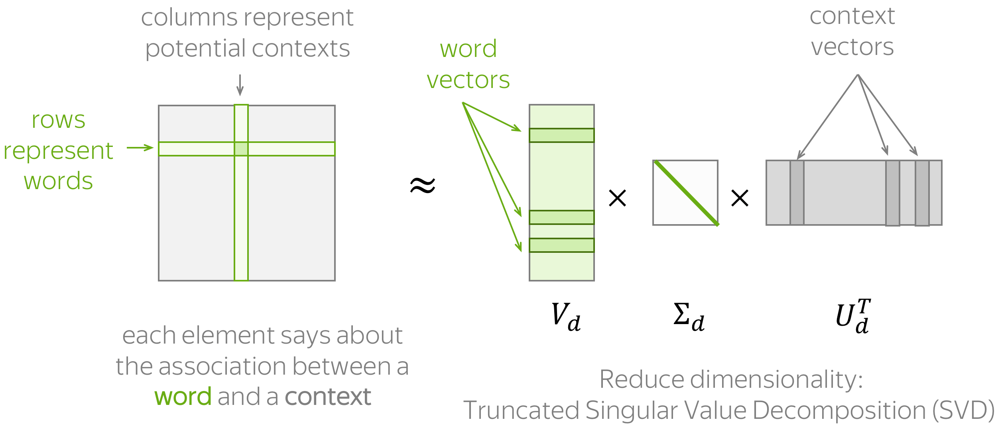
Один из ключевых шагов в эту сторону — построение матрицы совместной встречаемости слов. Пусть у нас есть словарь размера \(|V|\), а корпус представлен как последовательность токенов \(w_1, w_2, \ldots, w_M\). Мы фиксируем размер окна контекста \(c\) и для каждого вхождения слова \(w_t\) рассматриваем его окружение \(w_{t-c}, \ldots, w_{t-1}, w_{t+1}, \ldots, w_{t+c}\). Тогда матрица совместной встречаемости \(C \in \mathbb{R}^{|V| \times |V|}\) определяется как количество совместных появлений целевого слова \(i\) и контекстного слова \(j\) в пределах окна:
где \(\mathbf{1}[\cdot]\) — индикатор. Такая матрица уже несёт информацию о значениях, но она получается очень большой и разреженной, а частоты в ней сильно перекошены в пользу самых популярных слов.
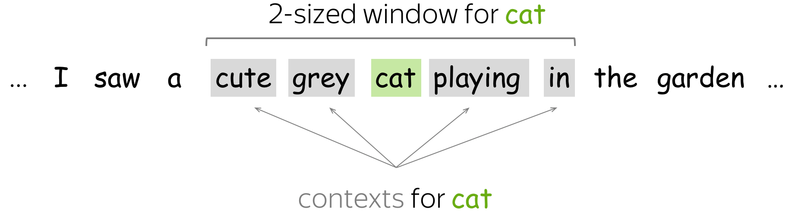
PPMI и LSA
Чтобы сделать матрицу совместной встречаемости более информативной, применяют нормализации, которые уменьшают влияние частотных слов и усиливают значимые связи. Для этого удобно перейти от “сырых” счётчиков к вероятностям. Обозначим
Тогда PMI (pointwise mutual information) измеряет, насколько совместное появление пары \((i,j)\) “неожиданно” по сравнению со случаем независимости:
А PPMI (positive PMI) отбрасывает отрицательные значения, оставляя только статистически “усиленные” связи:
Дальше часто делают ещё один шаг: применяют понижение размерности к матрице PPMI (или к матрице совместной встречаемости) через SVD. Пусть \(M\) — выбранная матрица (например, \(M=\mathrm{PPMI}\)). Тогда её разложение имеет вид
где мы оставляем только первые \(k\) компонент. Этот подход называют LSA: мы сжимаем исходное разреженное представление в компактное пространство, где начинают проявляться скрытые факторы тематики и смысла. В качестве векторного представления слова \(i\) часто берут строку матрицы \(U_k \Sigma_k\) (или \(U_k \Sigma_k^\alpha\) с некоторым \(\alpha \in (0,1]\)), то есть
Именно в этот момент появляется важная идея: смысл можно искать как структуру в большом наборе наблюдений, а понижение размерности помогает выделить эти скрытые “направления” в данных.
Косинусная близость векторов
Когда у нас есть векторные представления слов, возникает вопрос, как измерять их близость. Одна из самых распространённых мер — косинусная близость. Она вычисляется как нормализованное скалярное произведение векторов и по смыслу измеряет угол между ними:
Интуитивно косинусная близость хороша тем, что она меньше зависит от длины векторов и больше отражает их направление. Именно направление в эмбеддингах часто несёт семантический смысл.
Word2Vec
Частотные методы вроде хорошо показывают идею дистрибутивной семантики, но они опираются на явное построение больших матриц и последующую линейную алгебру. Word2Vec делает шаг в другую сторону: он предлагает учить эмбеддинги как параметры простой нейросетевой модели классификатора, которая решает вспомогательную задачу предсказания контекста. В итоге мы получаем плотные векторы небольшой размерности, а "смысл" слова возникает как побочный продукт оптимизации — ровно в духе дистрибутивной гипотезы.
В классическом Word2Vec есть две симметричные постановки: CBOW и Skip-gram.
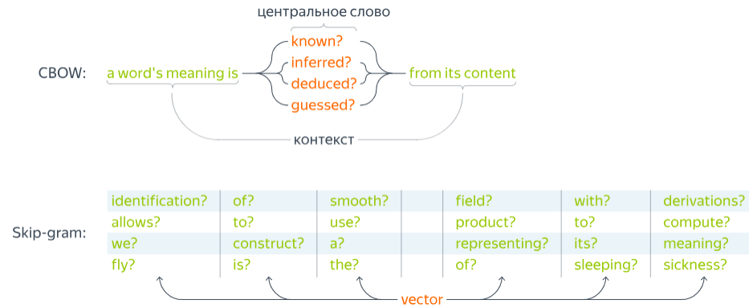
В CBOW модель по контексту предсказывает центральное слово, а в Skip-gram — наоборот, по центральному слову предсказывает слова контекста. Пусть \(w_t\) — токен в позиции \(t\), а окно контекста имеет ширину \(c\). Тогда контекст можно записать как набор индексов \(w_{t-c}, \ldots, w_{t-1}, w_{t+1}, \ldots, w_{t+c}\). В Skip-gram мы хотим максимизировать вероятность наблюдаемого контекста при фиксированном центральном слове:
Чтобы задать вероятности, Word2Vec вводит две матрицы параметров: входные эмбеддинги \(E \in \mathbb{R}^{|V|\times d}\) и выходные эмбеддинги \(E' \in \mathbb{R}^{|V|\times d}\). Для слова \(w\) его вектором служит строка \(v_w = E_{w,:}\), а для контекстного слова \(u_w = E'_{w,:}\). Тогда вероятность слова контекста задаётся через softmax:
Эта формула очень понятна по смыслу: если скалярное произведение \(u_o^\top v_i\) большое, то слово \(o\) считается "хорошим" контекстом для слова \(i\). Однако в таком виде обучение становится дорогим: знаменатель требует суммирования по всему словарю \(V\), а он может быть огромным. Поэтому на практике используют приближения, самое известное из которых — negative sampling. Вместо полного softmax мы учим модель отличать "правильные пары" (наблюдаемые в корпусе) от "случайных" (сэмплированных негативов). Тогда для положительной пары \((i,o)\) оптимизируют:
где \(\sigma(\cdot)\) — сигмоида, \(K\) — число негативных примеров, а \(P_n\) — распределение для сэмплирования негативных слов (часто это частоты, возведённые в степень \(3/4\)). Интуитивно это означает: модель должна давать большое скалярное произведение для реальных соседей и маленькое — для случайных слов.
После обучения возникает практический вопрос: какие векторы считать эмбеддингами слова — \(v_w\) или \(u_w\)? Часто берут входные эмбеддинги \(v_w\), иногда используют сумму \(v_w + u_w\) или их конкатенацию. Важно другое: геометрия этого пространства начинает отражать смысловые отношения. Слова, встречающиеся в похожих контекстах, получают близкие векторы, а некоторые направления в пространстве начинают соответствовать устойчивым семантическим признакам. Именно поэтому Word2Vec стал исторически важным шагом: он показал, что смысл можно получить не вручную, а как результат оптимизации простой предиктивной задачи на больших текстовых данных.
Рекуррентные нейронные сети
Основная идея и формальное определение
Рекуррентные нейронные сети (RNN) — это класс моделей, предназначенных для обработки последовательностей переменной длины. Их ключевая идея состоит в том, что модель обрабатывает последовательность шаг за шагом и хранит внутреннее состояние, которое переносит информацию о прошлом в будущее. На каждом шаге сеть получает текущий элемент последовательности \(x_t\) и обновляет скрытое состояние \(h_t\):
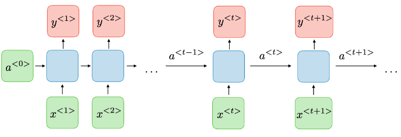
Таким образом, скрытое состояние играет роль “памяти”: оно аккумулирует контекст и позволяет модели учитывать то, что было раньше.
Обучение и инференс
Обучение RNN происходит по тем же принципам, что и обучение других нейросетей: мы задаём функцию потерь и минимизируем её градиентными методами. Пусть на каждом шаге сеть обновляет скрытое состояние и выдаёт выход
где \(x_t\) — вход на шаге \(t\), \(h_t\) — скрытое состояние, а \(\hat y_t\) — предсказание модели. Тогда суммарная функция потерь по последовательности часто записывается как
или, если задача many-to-one, как \(\mathcal{L}=\ell(\hat y, y)\), где \(\hat y = g(h_T)\). Отличие RNN состоит в том, что градиент распространяется через последовательность во времени, поэтому этот процесс называют backpropagation through time: при вычислении производных параметров учитывается цепочка зависимостей \(h_1 \to h_2 \to \ldots \to h_T\). На инференсе RNN проходит по последовательности слева направо, последовательно обновляя состояние и выдавая выход в нужной форме — одно значение, последовательность или генерацию токенов. Если последовательность генерируется автогрессивно, то часто используется схема
то есть предыдущее предсказание становится входом на следующий шаг.
Многослойная и двунаправленная RNN
Чтобы увеличить вычислительные способности модели, RNN часто делают многослойной. В многослойной RNN скрытое состояние каждого слоя получает на вход состояние предыдущего слоя на том же временном шаге. Для \(L\) слоёв это можно записать так:
а выход обычно строится по верхнему слою: \(\hat y_t = g(h_t^{(L)})\). Такая архитектура позволяет верхним слоям извлекать более абстрактные признаки последовательности.
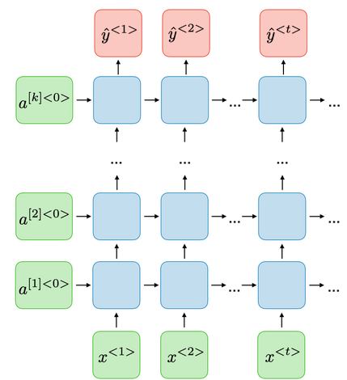
Двунаправленная RNN обрабатывает последовательность сразу в двух направлениях — слева направо и справа налево. Формально строятся два набора состояний:
после чего объединяются (например, конкатенацией)
и уже по \(h_t\) строится предсказание \(\hat y_t = g(h_t)\). Это полезно в задачах, где важен контекст с обеих сторон, например для разметки текста, но такая модель не подходит для онлайн-сценариев, где “будущее” ещё неизвестно.
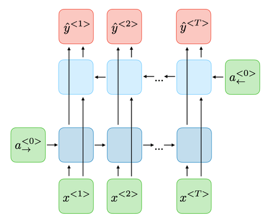
Проблемы обучения рекуррентных нейронных сетей
При обучении рекуррентных сетей градиент "протекает" через множество шагов времени, и на каждом шаге он умножается на матрицу Якоби перехода состояния, поэтому по правилу цепочки получается произведение вида:
Если нормы этих матриц в среднем меньше 1, произведение быстро стремится к нулю — возникает затухающий градиент, и модель перестаёт учить "дальние" зависимости; если же нормы больше 1, произведение раздувается — получается взрывной градиент, обучение становится нестабильным и может расходиться. Именно поэтому для RNN важно контролировать динамику градиентов (например, клиппингом) и использовать архитектуры с механизмами управления внутренней памятью (LSTM и GRU), которые облегчают перенос информации на большие расстояния по времени.
LSTM и GRU
LSTM и GRU — модификации RNN, которые вводят механизмы управления памятью через "вентили" (от англ. gates). Эти вентили регулируют, какую информацию сохранять, какую забывать и какую добавлять, благодаря чему модель лучше переносит информацию на большие расстояния по времени.
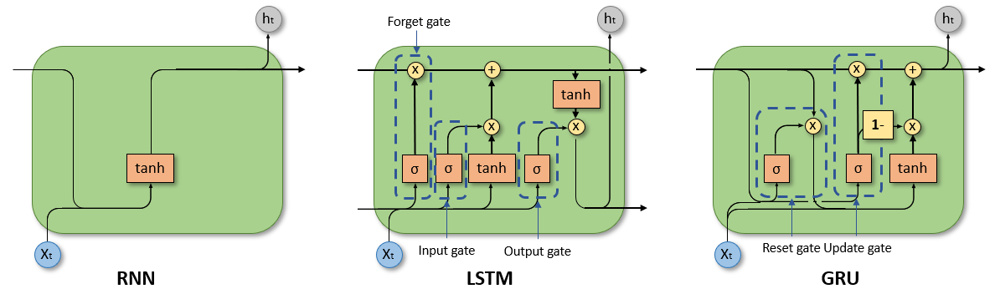
В LSTM состояние разделено на скрытое состояние \(h_t\) и “память” \(c_t\). Обновление задаётся следующими уравнениями:
где \(f_t\) — forget gate, \(i_t\) — input gate, \(o_t\) — output gate, а \(\odot\) — поэлементное умножение. Интуитивно: \(f_t\) решает, что забыть из старой памяти, \(i_t\) — что добавить нового, а \(o_t\) — что показать наружу.
В GRU используется более компактная схема без отдельного \(c_t\). Вводятся два “ворота” — reset и update:
Здесь \(z_t\) управляет тем, сколько старого состояния сохранить, а \(r_t\) — тем, насколько учитывать прошлое при вычислении нового кандидата \(\tilde h_t\).
На практике LSTM и GRU стали стандартом для многих задач обработки последовательностей до появления трансформеров, и даже сегодня они остаются полезными в задачах, где важна простота, скорость и последовательная обработка данных.
Seq2Seq модели и генерация последовательностей произвольной длины
Вы могли заметить, что до этого момента мы почти не обсуждали задачи, связанные с порождением последовательностей (синхронизированные варианты many-to-many — не в счёт). Действительно, многие рассмотренные выше модели применимы в задачах, где длина входной и выходной последовательности фиксирована или заранее известна, но в практических задачах это часто не так. Например, в машинном переводе мы не знаем заранее, какой длины получится перевод, и между словами исходного предложения и его перевода обычно нет однозначного соответствия.
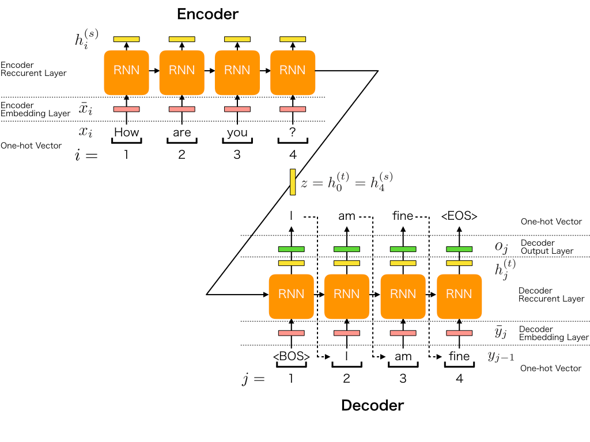
Естественным решением для задач sequence-to-sequence (seq2seq) является архитектура энкодер–декодер. Энкодер читает входную последовательность токен за токеном и сжимает информацию о ней в контекстное представление (context vector) — обычно это последнее скрытое состояние: \(c = h_T\). Декодер, в свою очередь, получает это представление и порождает новую последовательность по одному токену, фактически работая как языковая модель с дополнительным условием на вход (исходную фразу). Часто энкодер читают в обратном порядке: тогда последние токены входа оказываются ближе к первым шагам генерации, и декодеру проще "стартовать" с нескольких правильных предсказаний.
Процесс генерации устроен так: начальное состояние декодера инициализируется контекстным вектором, например \(s_0 = c\). На первый шаг подаётся специальный токен начала последовательности \(\langle BOS \rangle\), далее декодер выдаёт распределение следующего токена и выбранный токен подаётся на следующий шаг:
Эта процедура повторяется до появления токена конца последовательности \(\langle EOS \rangle\) или до достижения максимальной длины. На обучении чаще всего используют teacher forcing: вместо собственного предсказания \(y_{t-1}\) на вход подают правильный токен, что делает обучение стабильнее и ускоряет сходимость; на инференсе же модель вынуждена опираться на собственные предыдущие ответы. Именно здесь становится понятным, почему “простого” контекстного вектора часто недостаточно — и почему следующий шаг в эволюции seq2seq-моделей связан с механизмом attention.